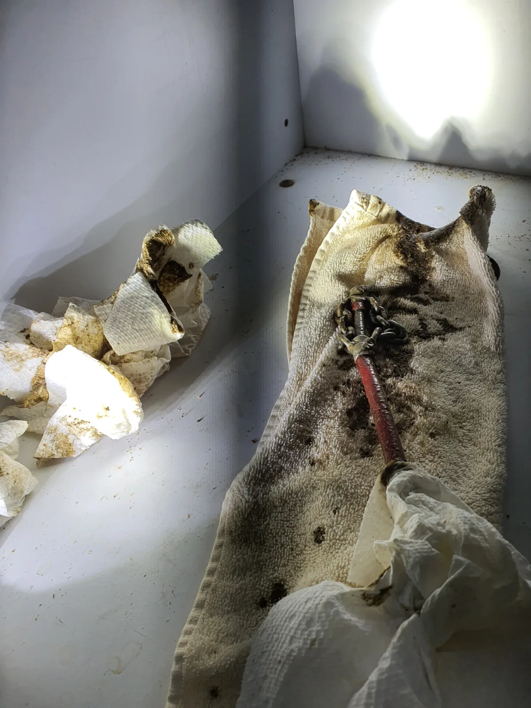

싱크대막힘 증상은 원인 구간부터 확인합니다
물이 천천히 빠지는 증상, 싱크대 물이 안 내려가는 증상, 싱크대 역류, 악취와 반복 막힘 등 같은 싱크대막힘 증상이라도 싱크대 배수구와 트랩, 주방 배수관 또는 연결된 공용배관 등 막힌 구간이 다를 수 있습니다. 신라건축설비는 증상만 보고 작업을 정하지 않고 현장 상태를 확인한 뒤 필요한 작업 범위와 비용 조건을 먼저 안내합니다.
실제 현장에서 확인되는 주요 원인: 기름때·슬러지·음식물 찌꺼기 축적, 주방 배수관 내부 오염과 배관 구간 막힘
주요 점검·작업: 석션·샤프트·배관내시경 점검과 배관 스케일링
싱크대막힘 원인부터 싱크대뚫는업체 선택까지
싱크대막힘 원인·싱크대역류·싱크대 물 안내려감·주방 배수구 막힘·기름때 막힘·배수관 청소·반복되는 싱크대막힘처럼 검색하는 상황은 표현은 달라도 같은 배수 문제에서 시작되는 경우가 많습니다. 신라건축설비는 단순 관통 여부만 보지 않고 증상, 막힘 위치, 이물질 여부와 배관 상태를 함께 확인해 필요한 작업을 판단합니다.
싱크대뚫는업체 선택 전 실제 작업사례를 확인하세요
광고 문구만이 아니라 실제로 어떤 증상을 어떤 장비로 진단하고 해결했는지가 중요합니다. 현재 신라건축설비 홈페이지에는 싱크대막힘 실제 현장사례 41편이 공개되어 있으며 지역, 원인, 작업 과정과 결과를 확인할 수 있습니다.
지역별 싱크대막힘·싱크대뚫는업체 실제 출동 기록
최근 싱크대막힘 해결사례
강동구 명일동 싱크대뚫는업체 | 기름때 제거와 정상 통수 확인 과정
명일동 싱크대뚫는업체의 작업 과정을 살펴볼 때는 물길 확보 이후 잔여 오염을 어떻게 확인하는지 보세요. 신라건축설비는 이번 현장에서 기름때를 반복 제거하고 물을 흘리며 추가 작업한 뒤 배수 상태를 확인했습니다.

부천시 원미구 도당동 싱크대막힘비용 | 접근 공간과 장비에 따른 견적 항목
싱크대막힘비용은 막힘 위치뿐 아니라 장비가 배관에 접근할 수 있는 조건에 따라 달라집니다. 도당동 현장은 내시경 점검 후 싱크대 하부 판재에 작업용 타공으로 접근 공간을 확보하고 샤프트 작업을 진행했습니다.

부천시 원미구 도당동 싱크대뚫는업체 | 내시경 점검부터 샤프트 작업까지
싱크대뚫는업체를 알아볼 때는 장비 이름과 함께 작업 접근 방법과 완료 확인 과정을 살펴보세요. 도당동에서는 내시경으로 내부 상태를 확인하고 필요한 접근 공간을 확보한 뒤 막힌 구간을 작업했습니다.
강동구 명일동 싱크대막힘비용 | 기름때 반복 제거 작업의 견적 조건
명일동 싱크대막힘비용을 비교할 때는 막힘 제거와 잔여 오염 정리, 작업 후 확인이 어디까지 포함되는지 살펴보세요. 이번 현장은 샤프트 와이어에 기름때가 반복해서 묻어 나와 2~3회 작업을 이어갔습니다.

부천시 원미구 도당동 싱크대막힘 | 타공 후 샤프트로 해결
부천시 원미구 도당동 싱크대막힘 사례 내시경으로 막힘을 확인하고 작업용 타공으로 접근 공간을 확보해 샤프트 작업과 통수 테스트를 마쳤습니다
강동구 명일동 싱크대막힘 | 기름때 반복 제거 후 정상 통수
강동구 명일동 싱크대막힘 현장에서 와이어에 묻어 나오는 기름때를 제거했습니다 샤프트를 2 3회 반복하고 물을 흘리며 추가 작업해 정상 배수를
동대문구 장안동 싱크대막힘 | 오피스텔 기름때 제거 주름관 교체
동대문구 장안동 싱크대막힘 오피스텔 싱크대 배관의 기름때를 샤프트로 제거하고 통수테스트 후 주름관을 새것으로 교체했습니다

수원시 권선구 권선동 싱크대막힘 | 빌라 하부배관 화장실 바닥 샤프트 작업
수원시 권선구 권선동 싱크대막힘 싱크대 하부와 화장실 바닥 배관에서 샤프트 작업을 진행하고 꼼꼼한 통수테스트로 배수 상태를 확인했습니다

성남시 분당구 금곡동 싱크대막힘 | 식당 기름때 석션 샤프트 반복 제거
성남시 분당구 금곡동 싱크대막힘 오래된 주름관과 배수관의 굳은 기름때를 석션 샤프트로 반복 제거하고 통수를 확인했습니다

안양시 동안구 평촌동 싱크대막힘 | 아파트 싱크대막힘 샤프트 2회 스케일링으로
안양시 동안구 평촌동 싱크대막힘 싱크대 물이 조금씩 역류하던 평촌동 아파트에서 석션 내시경 진단 후 샤프트 2회 배관스케일링으로 기름 오염물을
광진구 능동 싱크대막힘 | 오후 입실 앞둔 숙소에서 긴급 역류 석션부터 샤프트
광진구 능동 싱크대막힘 서울 광진구 능동의 외국인 이용객이 많은 숙소에서 싱크대 역류가 발생했습니다 오후 투숙객 입실을 앞두고 긴급 출동해

강북구 수유동 싱크대막힘 | 석션 반복해도 안 뚫려 샤프트로 막힘 구간 해결
강북구 수유동 싱크대막힘 현장에서 석션 작업을 반복했지만 막힘이 해소되지 않았고 내부에서도 원인이 뚜렷하게 보이지 않아 샤프트 작업으로 막힘
서울·경기·인천 싱크대막힘 출동
서울 22편 · 경기 18편 · 인천 1편의 실제 기록을 기반으로 지역별 사례를 연결합니다. 새로운 현장사례가 등록되면 해당 서비스와 지역 허브에 함께 누적됩니다.